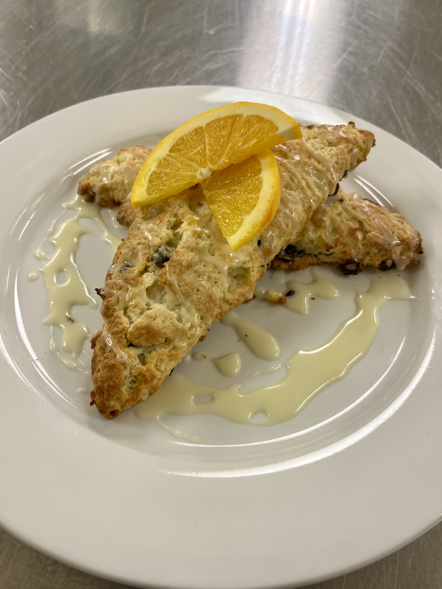
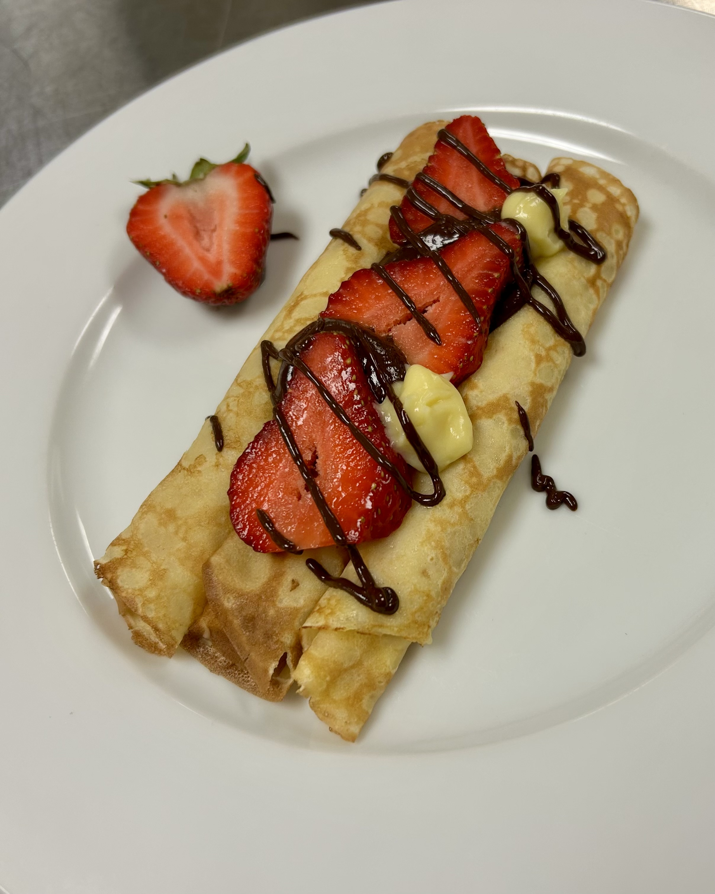
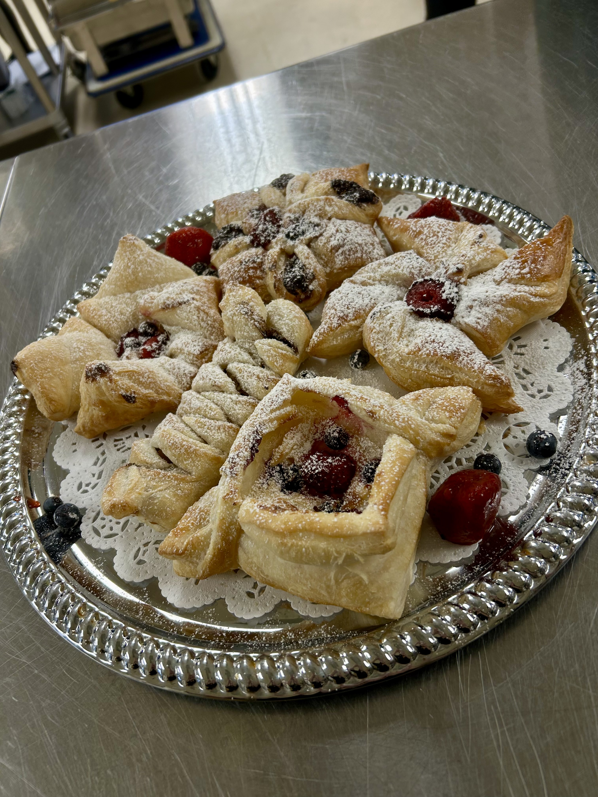
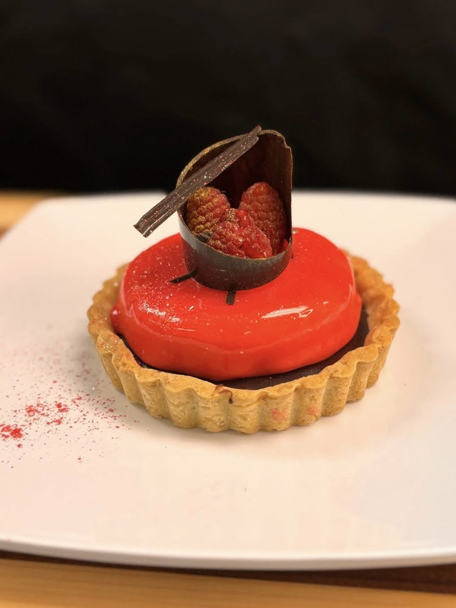
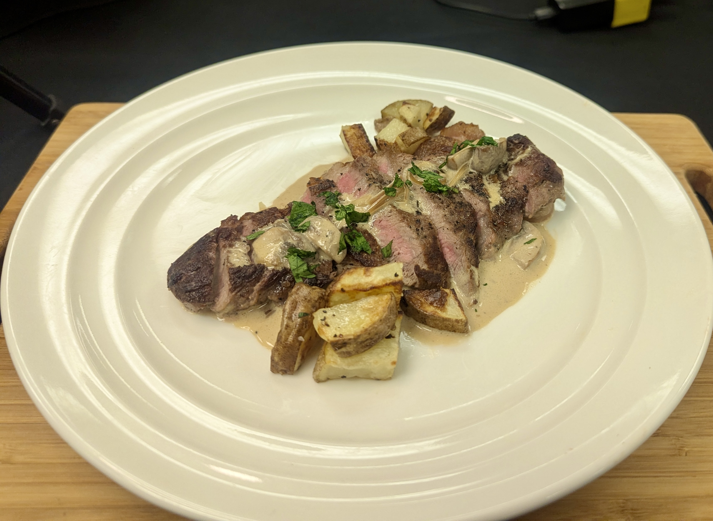
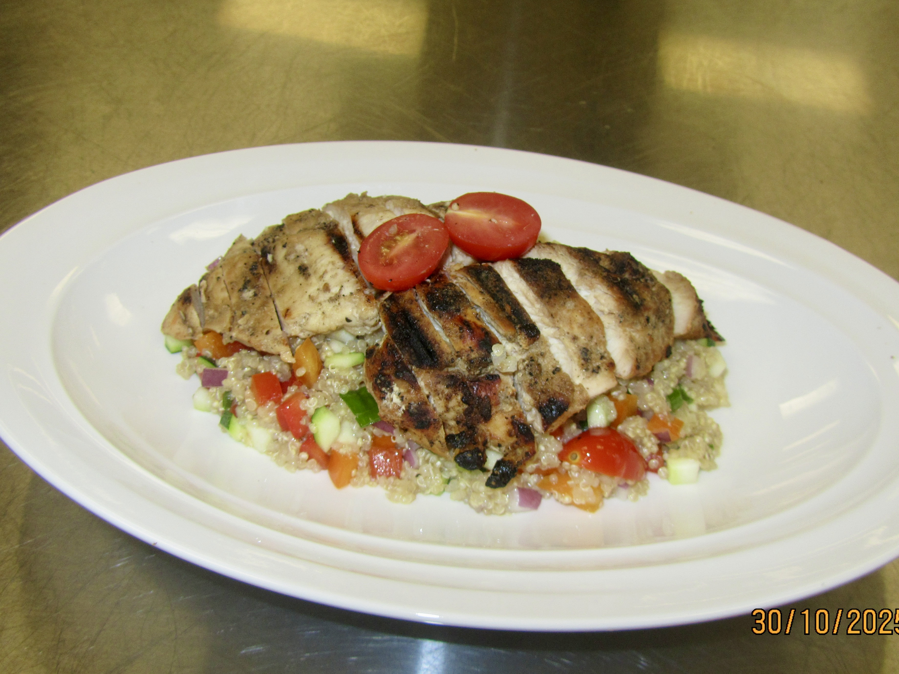

Culinary Arts is one of the most educational and enjoyable classes I have been taking during my high school journey. I joined the class in my sophomore year out of curiosity, and since then, I have developed a wide range of technical skills and culinary knowledge. Most importantly, I learned to view every mistake as a lesson to learn from. Moving forward, I am committed to continue giving my best and maximizing every opportunities this program provides me.

Orange Cranberry Scones
Components: dried cranberries, scone dough, orange glaze. Techniques: cut-in method, baking.

Crepes with Pastry Cream & Chocolate Sauce
Components: crepe batter, pastry cream, chocolate ganache, strawberries. Techniques: emulsification, plating, pastry cream preparation.

Berry Danishes
Components: crepe batter, pastry cream, chocolate ganache, strawberries. Techniques: emulsification, plating, pastry cream preparation.

Cream Cheese Mousse Entremet
Components:coconut shortbread tart, raspberry chocolate ganache, cream cheese mousse, white chocolate mirror glaze. Techniques: layering, emulsification, mousse stabilization, glazing, chocolate tempering.

Steak Diane & Roasted Potatoes
Components: steak, roasted potatoes, onion & mushroom sauce. Techniques: sauteing, searing, reduction.

Quinoa Salad
Components: quinoa, vinaigrette, peppers, tomatoes, zuccini, green onions, onions, chicken. Techniques: emulsification, plating, knife cuts.